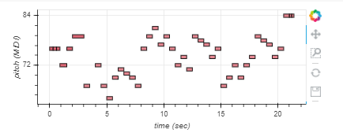
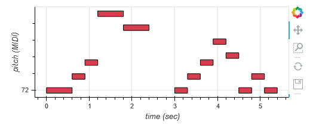

Caio Poschardt Antunes Mello RA: 11038715
Denes Leal dos Santos RA: 11032714
Leonardo Alves Ferretti RA: 11119715
Sergio Enzo Matsuda Sampa RA: 11011815
Vinicius Viana de Souza RA: 11201722492
Laboratório 9 - MIDI e IR
Segue o link do Collab utilizado para colocar os códigos em python e mostrar o resultado dos experimentos:
Acessar Collab.
Segue abaixo o plot da música criada a partir da biblioteca Magenta.

Fig.1 - Plot super mario.
A música pode ser ouvida abaixo:
A partir da música, foi utilizada a biblioteca IPyhton para convoluir o som com diferentes respostas impulsivas e simular
a música em diferentes ambientes.
Segue abaixo dois exemplos:
Segue abaixo o plot da música criada a partir da biblioteca Magenta.

Fig.1 - Plot Música Denes.
A música pode ser ouvida abaixo:
A partir da música, foi utilizada a biblioteca IPyhton para convoluir o som com diferentes respostas impulsivas e simular
a música em diferentes ambientes.
Segue abaixo dois exemplos: